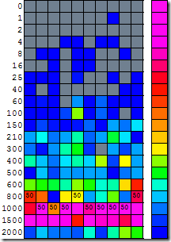
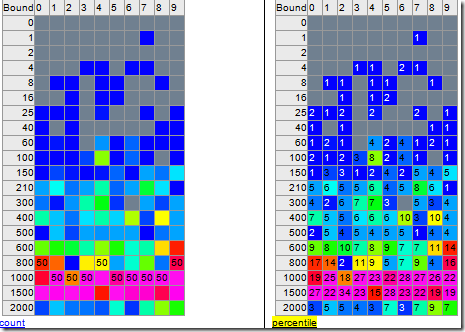

Efficiently Tracking Response Time Percentiles (in C#)
Posted on March 9, 2013
When looking for a better way to track response times than a simple min/max/average statistic recently I found a great article that had a clever solution. This article shows how to efficiently track the n-th percentile performance while storing only a small amount of data. See the full original article at http://techblog.molindo.at/2009/11/efficiently-tracking-response-time-percentiles.html
The original code is in Java but I needed it in .NET so I’ve created a .net version on github. I chose to do a complete rewrite rather than porting the Java code so the class names etc will be different. The idea however is the same.
My .net version can generate output in three formats
Image

HTML

Text